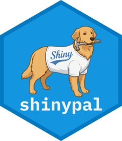

Package index
-
accordion_panel_remove_button() - Accordion panel that includes a remove button
-
add_shinypal_data_step() - Register a complete data-producing step
-
add_shinypal_plot_step() - Register a complete plot-producing step
-
add_shinypal_step() - Add a step to the report, workflow, and the code chain
-
clip_observe() - Add an observer to a copy button
-
column_select_observe() - Keep a
varSelectInputof data.frame column names up-to-date -
df_modal_button() - Button to show dataframe modal
-
df_modal_observe() - Show a modal with a reactable data.frame
-
df_select_observe() - Keep a
selectInputof intermediate data.frames up-to-date -
file_observe() - Observe a file input to be included in the download bundle
-
get_chunk() - Get the expanded code chunk for a registered step
-
get_colors() - Generate step colors from a step index
-
get_int_data() - Get an intermediate data object
-
get_int_dfs() - Get the names of all intermediate data.frames for a given step
-
is_shinylive() - Detect a shinylive (webR) session
-
next_step_index() - Get the next workflow step index
-
select_column_input() - Select input to choose a column from a specified dataset
-
select_dataset_input() - Select input to choose a shinypal intermediate dataset
-
set_int_data() - Set an intermediate data object
-
shinypal_setup() - Setup shinypal
-
shinypal_ui() - UI for ShinyPal
-
verbatimTextOutput_copy() - Text element with a button to copy the code to the clipboard
-
workflow_has_errors() - Check whether the workflow has incomplete or errored steps